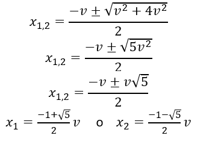
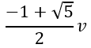
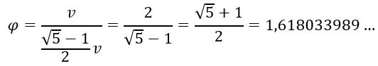
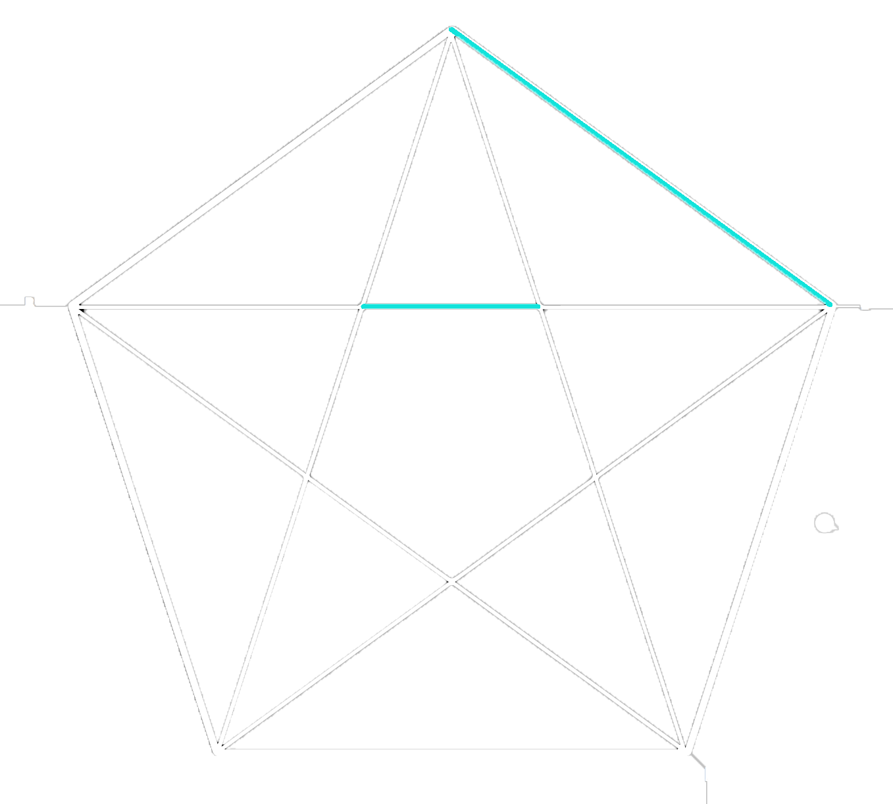
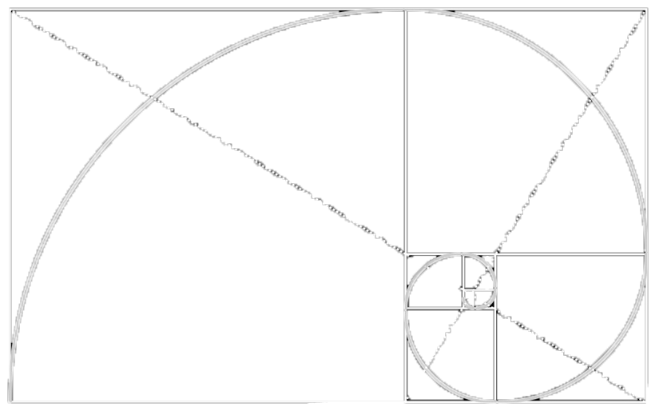
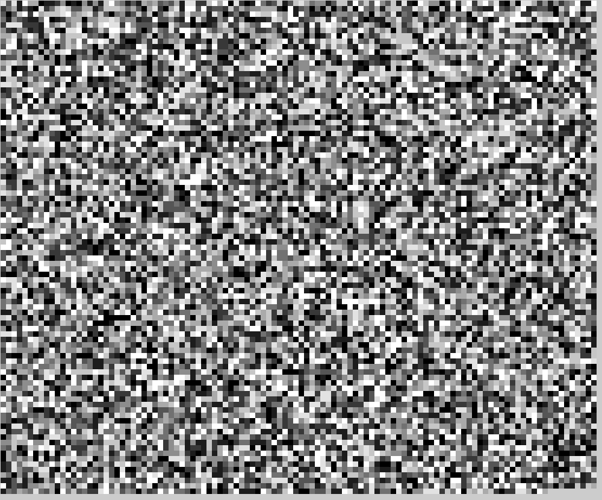

DEF: Si dice sezione aurea di un segmento la parte del segmento che è media proporzionale tra l’intero segmento e la parte rimanente.
La sezione aurea
Tale sezione prende anche il nome di costante di Fidia o proporzione divina. Per determinarne il valore, consideriamo un segmento di misura v. Detta x la sezione aurea, essa dovrà soddisfare la seguente proporzione.
v:x=x:(v-x)
Svolgendo i calcoli.
v(v-x)=x2
v2-vx=x2
x2+vx-v2=0

Consideriamo solo x1 perché i segmenti non possono essere negativi, pertanto la misura della parte aurea di un segmento di misura v è la seguente.

Il rapporto aureo
È anche possibile definire il rapporto aureo, cioè il rapporto tra la misura di un segmento e la sua sezione aurea; dunque è indipendente dalla misura del segmento stesso. Tale rapporto si indica con la lettera greca ϕ.

Nella geometria
La sezione aurea ricorre abbastanza frequentemente in geometria. Nel pentagono regolare emerge naturalmente, e per questo venne scoperto dai greci, nel rapporto fra la diagonale e il lato o, fra il pentagono interno e il lato della punta stellata.

Si ritrova anche nel decagono come rapporto fra la misura del raggio della circonferenza circoscritta e del lato, o ancora, trasferendoci nella geometria solida, perfino nel dodecaedro, un poligono a dodici pentagoni, e nell'icosaedro, entrambi solidi regolari.
Poligoni aurei

Si definisce rettangolo aureo il rettangolo avente un lato che è sezione aurea dell'altro.Si definisce triangolo aureo il triangolo isoscele avente i due lati uguali in rapporto aureo con il terzo lato. Inoltre si può notare che è ricavabile una successione di figure simili sempre più piccole con fattore φ di rimpicciolimento rispetto a quella più esterna. Inoltre, nel rettangolo aureo, è possibile verificare che la sequenza "converge" verso un punto di fuga che non si raggiungerà mai, denominato dal matematico Clifford A. Pickover l'occhio di Dio, probabilmente rifacendosi alla definizione di "divina" data alla proporzione da Pacioli.
Costruzione con riga e compasso della sezione aurea di un segmento.

Dato il segmento AB, si deve tracciare la perpendicolare ad AB nell’estremo B e si deve prendere su di essa il segmento BO lungo metà di AB. Quindi, col centro in O, si deve costruire una circonferenza di raggio OB. A questo punto si unisce A con O e si indica con C e D le intersezioni della retta AO con la circonferenza precedente. Infine con centro in A e raggio AC, si costruisce la circonferenza che incrocia il segmento AB in E, AE≅AC. Dimostriamo che AE è il segmento cercato, cioè che sussiste la proporzione
AB:AE=AE:EB
Per il teorema della tangente e della secante, si ha
AD:AB=AB:AC
Applicando la proprietà dello scomporre, si ottiene
(AD-AB):AB=(AB-AC):AC
Siccome è
AB≅CD e AC≅AE
si ha anche
AD-AB≅AD-CD=AC≅AE e AB-AC≅AB-AE=EB
La proporzione(AD-AB):AB=(AB-AC):AC quindi diventa
AE:EB=EB:AE
da cui, per la proprietà dell’ invertire,
AB:AE=AE:EB
Pertanto AE è la sezione aurea di AB.
Sommando a un segmento la sua sezione aurea si ottiene un nuovo segmento di cui quello dato è sezione aurea. Infatti, applicando alla proporzionev:x=x:(v-x)la proprietà del comporre, si ottiene
(v+x):a=[x+(v-x))]:x → (v+x):v=v:x
Tale proporzione prova l’enunciato.
Caratteristiche comuni con la successione di Fibonacci
La successione di Fibonacci è una successione di numeri tale che, partendo da 0 e 1, qualsiasi termine successivo si ottiene sommando i due precedenti
0 1 1 2 3 5 8 13 21 34 ...
Possiamo osservare che, se dividiamo ogni termine, a partire dal terzo per il precedente, la successione dei rapporti tende al rapporto aureo ϕ.
Infatti, se scriviamo la successione dei rapporti a partire deal terzo termine, si ha
da cui si vede che i valori dei rapporti si avvicinano sempre di più a 1.61803… che è il valore di ϕ. Nel rettangolo aureo la successione dei lati dei quadrati si ottiene come la successione dei numeri di Fibonacci.
Questa è la Sezione Aurea!
Questa immagine mostra le prime 10.000 di cifre della Sezione Aurea, ognuna delle quali è rappresentata da un quadratino di diverso colore disegnati in sequenza, da totalmente bianco a totalmente nero in base alla cifra che rappresenta, infatti più la cifra sarà vicina allo 0 e più il quadrato sarà di un colore chiaro, diventando sempre più scuro fino ad arrivare al numero 9, rappresentato da un quadratino tutto nero.
Clicca qui per scaricare la versione da 1.000.000 di cifre e qui per il codice che produce questa immagine.

Il suono della Sezione Aurea!
Abbiamo visto come si vede la Sezione Aurea, ma come si sente?
Questo audio contiene 15 secondi nei quali vengono riprodotte le sue cifre in sequenza con un intervallo fra una e l'altra di 90 millisecondi, viene riprodotta una certa frequenza per ogni cifra, le frequenze vanno dai 200 hz ai 900 hz. Più la cifra sarà bassa, più la frequenza sarà vicina ai 200 hz, viceversa se la cifra sarà alta la frequenza sarà vicina ai 900 hz.
Clicca qui per il codice che produce questo audio.